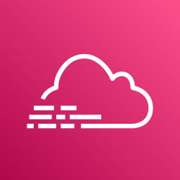

Лекція 9: CloudWatch і CloudTrail
Середній рівень: усі правила й числа з повної лекції, але простими словами й без розповіді про наш проєкт. Повна: ../9-cloudwatch.md. Ціни й ліміти в повній лекції звірено з документацією AWS на 2026-10-27; що не вдалося підтвердити, позначено (не звірено). Це домен Troubleshooting and Optimization (22%) і частина Development.
Головна ідея
CloudWatch відповідає «як працює», CloudTrail «хто це зробив», X-Ray «де в ланцюжку». Метрики кажуть «що зламалося», логи «чому», трейс «де».
Навіщо це так задумано
У хмарі нема сервера, на який можна зайти й подивитись, тому метрики, логи й alarm збираються окремо й дивляться на систему ззовні. CloudTrail окремо, бо «хто це зробив» не те саме, що «як це працює».
Крок 1. Словник
| Термін | Суть |
|---|---|
| Метрика | часовий ряд чисел (Errors функції за хвилину); має namespace, ім'я, dimensions |
| Namespace | контейнер метрик сервісу (AWS/Lambda, AWS/SQS) |
| Dimension | пара «ім'я = значення», що уточнює метрику (FunctionName=...); кожна нова комбінація dimensions це нова метрика |
| Alarm | правило, що стежить за однією метрикою й змінює стан |
| Log group / log stream | група логів (одна на функцію) і потоки в ній (по одному на середовище) |
| Logs Insights | мова запитів над логами |
| Dashboard | сторінка з віджетами |
| statistic | агрегація: Sum, Average, Maximum, p99 |
| period | інтервал агрегації, секунди |
TreatMissingData |
що робити, коли даних нема |
| composite alarm | alarm, що поєднує інші alarm |
| metric filter | правило, що рахує патерни в логах як метрику |
| subscription filter | пересилання логів в інший сервіс |
| EMF | Embedded Metric Format: метрики прямо з JSON-логу |
| Live Tail | потік логів у реальному часі |
Крок 2. Метрики Lambda без налаштування
Функція публікує в AWS/Lambda:
| Метрика | Що означає | Нюанс |
|---|---|---|
Invocations |
кількість викликів | не рахує тротлінг |
Errors |
виклики з помилкою | не включає Throttles |
Throttles |
відхилені через ліміт паралельності | |
Duration |
тривалість | статистики p50, p99 |
ConcurrentExecutions |
паралельні виконання | |
AsyncEventAge |
вік async-події на момент обробки | лише async |
AsyncEventsDropped |
async-події, відкинуті після повторів без DLQ | лише async |
DeadLetterErrors |
не вдалося записати в DLQ | |
IteratorAge |
відставання потоку | лише Kinesis і DynamoDB Streams |
Пастка іспиту: Lambda не публікує метрики пам'яті. Пам'ять видно лише в рядку REPORT (Max Memory Used). Метрик EC2 «пам'ять» і «диск» теж нема без CloudWatch Agent.
Крок 3. Логи
Функція пише stdout у log group /aws/lambda/<назва>. Для запису потрібна роль виконання (logs:CreateLogStream, logs:PutLogEvents, політика AWSLambdaBasicExecutionRole).
Кожен виклик додає START, END і REPORT (Duration, Billed Duration, Memory Size, Max Memory Used, Init Duration). Init Duration є лише при cold start і входить у Billed Duration.
Retention. Допустимі значення: 1, 3, 5, 7, 14, 30, 60, 90 днів тощо, або «ніколи». Лог-групи, які AWS створює сам, мають «Never expire», тому групу описують у шаблоні й вказують у LoggingConfig.LogGroup. Видалення після retention не миттєве: до 72 годин після закінчення строку.
Крок 4. Alarm
Три стани: OK, ALARM, INSUFFICIENT_DATA.
| Параметр | Зміст |
|---|---|
Namespace, MetricName, Dimensions |
що міряємо |
Statistic |
як агрегуємо в періоді (Sum) |
Period |
довжина одного datapoint (60 с для Lambda); метрики SQS надходять щохвилини, але можна ставити й 300 с |
EvaluationPeriods |
скільки періодів дивимось |
Threshold і ComparisonOperator |
умова |
TreatMissingData |
breaching, notBreaching, ignore, missing (за замовчуванням) |
AlarmActions |
що робити в ALARM (SNS, Auto Scaling, EC2 stop/terminate/recover, Systems Manager) |
- Дії можна задати окремо для
ALARM,OKіINSUFFICIENT_DATA. Якщо задано лишеAlarmActions, листа про повернення вOKне буде. TreatMissingData: notBreachingдля рідкісних подій: без викликів метрикаErrorsне публікується, і без цього alarm пішов би вINSUFFICIENT_DATA.- Метрики SQS публікуються лише поки черга активна, тому порожня черга дає
INSUFFICIENT_DATA. - Datapoints to alarm («M з N»): спрацьовує, коли M з N останніх періодів порушують умову.
- Composite alarm поєднує alarm логікою AND/OR і зменшує шум.
- Alarm на metric math рахується як кілька alarm-метрик.
- Alarm
Errorsможе використовувати CodeDeploy під час canary для автоматичного відкату.
Крок 5. SNS для сповіщень
Alarm публікує в топік SNS, топік розсилає (email, SMS, HTTP, Lambda, SQS).
- Підписка за email створюється у стані
PendingConfirmation: CloudFormation її не підтверджує, людина натискає Confirm subscription у листі від AWS. Доки не підтвердили, листів нема. - Alarm CloudWatch не може публікувати в топік, зашифрований керованим ключем
alias/aws/sns: потрібен власний KMS-ключ із дозволом дляcloudwatch.amazonaws.com. - Типовий топік дозволяє публікувати принципалам власного акаунта.
Крок 6. Дашборд і зберігання метрик
Дашборд описують у шаблоні (AWS::CloudWatch::Dashboard, JSON, !Sub). Його ARN без регіону: arn:aws:cloudwatch::<акаунт>:dashboard/....
Зберігання метрик: менше 60 с: 3 години; 1 хв: 15 днів; 5 хв: 63 дні; 1 год: 455 днів (приблизно 15 місяців). Тому графіки лишаються навіть після видалення ресурсів.
Крок 7. Logs Insights, metric filter, EMF
- Logs Insights: запит, наприклад
fields @timestamp, @message | filter @message like /ERROR/ | sort @timestamp desc | limit 20. Платно за ГБ просканованих даних. - Metric filter: правило на патерн у логах, яке з кожного збігу робить значення власної метрики. Власні метрики поза free tier (10 безкоштовно) платні.
- EMF: спеціальний JSON у stdout, з якого CloudWatch сам витягує метрики без
PutMetricData. Рекомендований спосіб власних метрик у Lambda (Powertools). - Subscription filter: пересилає логи в Kinesis, Firehose або іншу Lambda.
Роздільна здатність: стандартна 1 хв, high-resolution до 1 с (StorageResolution=1, власні метрики через PutMetricData); high-res alarm з періодом 10 або 30 с. PutMetricData потребує cloudwatch:PutMetricData.
Крок 8. Ціни й як не потрапити на гроші
| Що | Ціна |
|---|---|
| Перші 10 стандартних alarm на акаунт | безкоштовно (рахується кількість alarm, не спрацювань) |
| Далі | близько 0,10 USD за alarm на місяць (high-res близько 0,30, composite близько 0,50) |
| SNS: перші 1000 листів на місяць | безкоштовно |
| Дашборди | 3 безкоштовно (до 50 метрик кожен) |
| Логи | 5 ГБ на місяць безкоштовно на збір, зберігання і скановані Logs Insights дані разом; далі збір 0,50 USD за ГБ |
| Власні метрики | перші 10 безкоштовно |
| Lambda | 1 млн запитів і 400 000 ГБ·с безкоштовно; 0,20 USD за 1 млн; тарифікований час включає ініціалізацію поза handler |
Як не потрапити:
- Тримайте alarm у межах 10 на акаунт.
- Не вмикайте платне без потреби (Lambda Insights, Application Signals, X-Ray на всіх викликах, provisioned concurrency).
- Не кладіть змінні значення в dimensions власних метрик.
- Не лишайте
DEBUG-логування постійно. - Завжди задавайте retention для нових лог-груп.
- Стежте за Billing → Free Tier і бюджетами.
Крок 9. Перевірка ланцюга alarm → пошта
aws cloudwatch set-alarm-state --alarm-name ... --state-value ALARM --state-reason test примусово переводить alarm у ALARM, не чіпаючи реальну метрику; стан за кілька хвилин повертається сам, бо CloudWatch перераховує метрику.
Крок 10. Для іспиту DVA
- Метрики за замовчуванням: EC2 раз на 5 хв (detailed monitoring раз на хвилину, платно); пам'ять і диск EC2 лише через CloudWatch Agent; Lambda пам'ять не публікує.
- Власні метрики з Lambda: EMF (без викликів API) або
PutMetricData. - CloudWatch проти CloudTrail: продуктивність і стан проти «хто викликав API» (аудит).
- CloudWatch проти X-Ray: метрики й логи проти розподіленого трасування.
- Пастки: «alarm не листує» означає непідтверджена підписка SNS чи нема
AlarmActions; «метрики пропали, alarm вINSUFFICIENT_DATA» означаєTreatMissingData; «логи не пишуться» означає немаlogs:*у ролі виконання; «логи вічні й дорожчають» означає не задано retention.
Крок 11. CloudTrail
CloudTrail це журнал аудиту: кожен виклик API акаунта (хто, коли, з якого принципала, чи вдалося).
| Що | Ціна |
|---|---|
| Event history (90 днів management-подій, вкладка в консолі) | безкоштовно, увімкнено за замовчуванням |
| Trail (потік подій у S3), перша копія management-подій регіону | безкоштовно (платите лише за S3) |
| Додаткові копії management-подій | близько 2 USD за 100 000 подій |
| Data events (читання об'єктів S3, виклики Lambda) | близько 0,10 USD за 100 000 подій |
| Insights (близько 0,35 USD за 100 000 management-подій), CloudTrail Lake | платно |
- Management-події це керування ресурсами (
CreateFunction,PutRolePolicy,AssumeRoleWithWebIdentity) і пишуться завжди. - Data events це операції над вмістом; вимкнені за замовчуванням, бо їх дуже багато.
- Окремий trail потрібен, коли треба зберігати аудит довше 90 днів, є вимоги безпеки, або алерти на небезпечні дії (вхід root, зміна IAM) через EventBridge. Дешевий варіант: multi-region trail з management-подіями в приватний S3-бакет.
- У невдалій події
AssumeRoleWithWebIdentityнемаResource name: це ознака відхиленого виклику. Причину читають у JSON події:errorCode,errorMessage. Тимчасові ключі STS маютьAccessKeyзASIA.... - Для запитів над журналом: Athena або CloudTrail Lake.
Словник
| Термін | Що це |
|---|---|
| Metric | ряд чисел у часі (CPU, кількість запитів) |
| Namespace | контейнер метрик (AWS/Lambda) |
| Dimension | атрибут, що розрізняє метрики: FunctionName, InstanceId |
| Alarm | реакція на метрику: поріг, кілька періодів, дія (SNS, Auto Scaling) |
| Log group / log stream | група логів одного застосунку і потік одного джерела в ній |
| Metric filter | перетворює збіги в логах на метрику |
| Logs Insights | запити до логів мовою CloudWatch |
| CloudTrail | журнал викликів API: хто, що, коли зробив |
🖼 Схема: CloudWatch, моніторинг, аудит
| Що | Суть |
|---|---|
| API | PutMetricData |
| Dimensions | розбити метрики за атрибутами |
| Standard resolution | 1 хвилина |
| High resolution | зберігається до 1 с (запит з періодом 1/5/10/30 с чи кратне 60), дорожче |

CloudTrail, Elastic Beanstalk- в S3, CreateExportTask
- від секунд до кількох годин
- не real-time
- майже real-time
 Lambda, Kinesis Streams/Firehose, OpenSearch
Lambda, Kinesis Streams/Firehose, OpenSearch- можна з кількох акаунтів
Що запам'ятати на іспит
- Alarm стежить за однією метрикою; платять за кількість alarm, не за спрацювання; 10 безкоштовні.
- Щоб alarm був корисним, потрібні
AlarmActionsі підтверджена підписка SNS. TreatMissingData: notBreachingдля рідкісних подій.- Lambda не публікує метрики пам'яті: дивіться
REPORT. Errorsне включаєThrottles.- Власні метрики з Lambda: EMF. High-resolution: 1 с.
- Retention задавайте завжди: автоматичні лог-групи вічні.
- CloudTrail: Event history 90 днів безкоштовно, data events вимкнені за замовчуванням.
- Alarm не може писати в SNS-топік з
alias/aws/sns.
Перевірте себе
- Чим
INSUFFICIENT_DATAвідрізняється відALARM? - Що робить
TreatMissingData: notBreachingі чому підходить для рідкісних викликів? - Чому alarm не надсилає лист, хоча він у
ALARM? Назвіть дві причини. - Що рахується за плату: alarm чи їх спрацювання?
- Чому в метриках Lambda нема пам'яті і де її побачити?
- Як опублікувати власну метрику з Lambda без виклику API?
- Чим Logs Insights, metric filter і subscription filter відрізняються?
- Чим відрізняються CloudWatch, CloudTrail і X-Ray?
- Як перевірити ланцюг alarm → SNS → пошта, не ламаючи метрику?
- Чому лог-група Lambda, створена AWS автоматично, дорожча в довгостроці?
- Які події CloudTrail безкоштовні, а які платні? Чому data events вимкнені?
Відповіді
INSUFFICIENT_DATAозначає даних замало (метрика не публікується),ALARMозначає умова порушена. Перший виникає, наприклад, коли функцію не викликають.- Відсутність даних вважається «не поломкою». Без викликів метрика
Errorsне публікується. - Підписка SNS не підтверджена (
PendingConfirmation) або немаAlarmActions. Також топік може бути підalias/aws/sns. - Кількість alarm (10 перших безкоштовні).
- Lambda їх не публікує. Дивіться
Max Memory Usedу рядкуREPORT. - EMF: структурований JSON у лог (Powertools Metrics).
- Insights це запити над логами, metric filter робить метрику з патерну, subscription filter пересилає логи в Kinesis, Firehose чи Lambda.
- CloudWatch: стан і продуктивність. CloudTrail: хто викликав API. X-Ray: шлях запиту.
aws cloudwatch set-alarm-state ... --state-value ALARM.- Retention «Never expire» за замовчуванням, лог-групу створює AWS без вашого ресурсу.
- Безкоштовні: Event history (90 днів) і перша копія management-подій у trail. Платні: додаткові копії, data events, Insights. Data events дуже багато, тому вимкнені.
Повна версія: 9-cloudwatch.md.